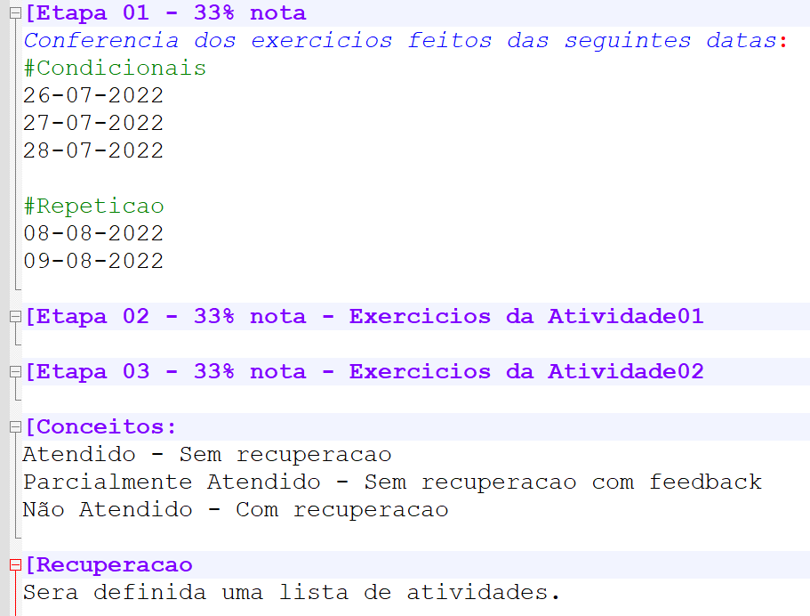

Composição da Nota

LISTA DE ATIVIDADES....
Atividade 01 - 11-08-2022 - LISTA 08 - CONDICIONAIS E REPETICAO - ATIVIDADES EM GRUPO
Atividade 02 - 15-08-2022 - LISTA 09 - REPETICAO - ATIVIDADES EM GRUPO
RECUPERACAO - CONDICIONAIS E REPETICAO - XX-08-2022 - LISTA 10 - RECUPERACAO - ATIVIDADE INDIVIDUAL